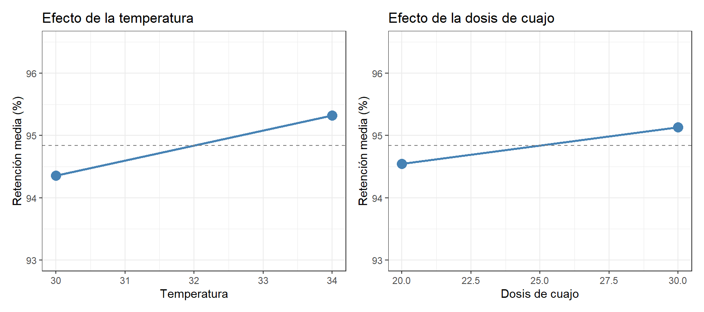
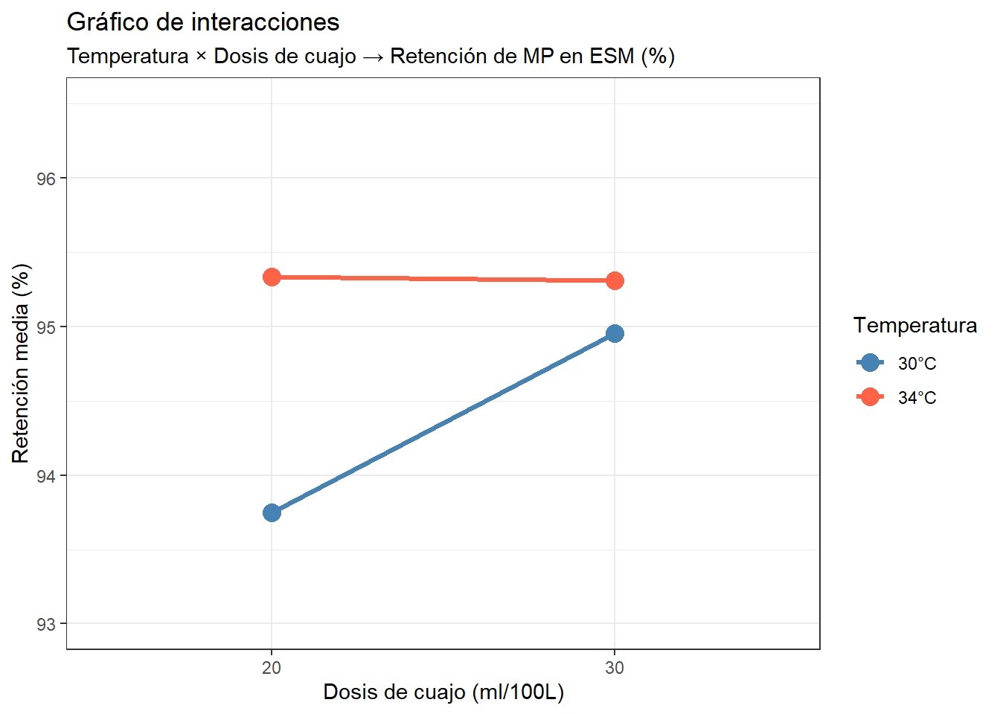

Los gráficos de control de este capítulo se generan exclusivamente con R, porque dispone de herramientas específicas mucho más adecuadas que Python para esta tarea.
10.1 El problema del ensayo y error: por qué “un factor a la vez” no es suficiente
En la industria es habitual enfrentarse a preguntas del tipo: ¿a qué temperatura debo cuajar para obtener mejor retención de materia prima? ¿Qué dosis de cuajo es la óptima? ¿Cambia el resultado si modifico los dos a la vez?
La respuesta intuitiva es probar una cosa cada vez: primero cambio la temperatura y veo qué pasa, luego cambio la dosis y veo qué pasa. Este enfoque se conoce como OFAT (One Factor At a Time, un factor a la vez) y es, con diferencia, el más extendido en la práctica industrial. Su aparente sencillez lo hace atractivo: parece lógico, ordenado y fácil de interpretar.
El problema es que el enfoque OFAT es incorrecto en la mayoría de los casos industriales reales. Tiene dos defectos fundamentales:
Primero, no detecta las interacciones entre factores. Una interacción ocurre cuando el efecto de un factor depende del nivel al que se encuentra el otro. Por ejemplo: puede que subir la temperatura mejore la retención de materia prima cuando la dosis de cuajo es baja, pero no cuando es alta. Si solo cambiamos un factor a la vez, fijaremos el otro en un nivel arbitrario y nunca sabremos si la conclusión que obtenemos es válida para otros niveles del factor fijo. Podemos llegar a recomendar “usa temperatura alta” cuando la respuesta correcta es “usa temperatura alta solo si usas dosis baja de cuajo”.
Segundo, es menos eficiente que el diseño factorial. Para estudiar dos factores con tres réplicas, el OFAT requiere al menos 12 experimentos pero solo obtiene información sobre cada factor de forma independiente. Un diseño factorial 2² con tres réplicas también usa 12 experimentos, pero obtiene información sobre los dos factores y su interacción simultáneamente, con mayor precisión estadística.
El diseño de experimentos (DoE, del inglés Design of Experiments) es la metodología que permite estudiar varios factores simultáneamente de forma eficiente, detectar interacciones y obtener conclusiones estadísticamente sólidas con el mínimo número de experimentos necesarios.
10.2 Los conceptos básicos
Factor y niveles
Un factor es una variable que controlamos deliberadamente durante el experimento. Los niveles son los valores que ese factor toma en el experimento. Usamos habitualmente dos niveles por factor — un nivel bajo y un nivel alto — lo que se denomina diseño de dos niveles.
En nuestro caso:
Factor A — Temperatura de cuajado: nivel bajo = 30°C, nivel alto = 34°C
Factor B — Dosis de cuajo: nivel bajo = 20 ml/100L, nivel alto = 30 ml/100L
La variable respuesta
La respuesta es la variable que medimos para evaluar el efecto de los factores. En nuestro experimento, la respuesta es el porcentaje de retención de materia prima en el extracto seco magro (ESM) del queso: la proporción de la materia prima de la leche que queda retenida en el queso, expresada en porcentaje. En condiciones normales de proceso, este indicador oscila entre el 92% y el 98%.
Las réplicas
Una réplica es la repetición completa de una combinación de tratamiento. Las réplicas son imprescindibles porque permiten estimar la variabilidad experimental — la variación que existe incluso cuando hacemos exactamente lo mismo dos veces — y distinguirla del efecto real de los factores. Sin réplicas no podemos saber si una diferencia entre dos tratamientos es real o es simplemente ruido experimental.
La aleatorización
El orden en que se realizan los experimentos debe ser aleatorio. Si fabricamos primero todas las combinaciones con temperatura baja y luego todas con temperatura alta, cualquier factor que cambie con el tiempo (variación de la leche, temperatura ambiental, fatiga del operario) quedará confundido con el efecto de la temperatura. La aleatorización distribuye estos efectos de forma aleatoria entre todas las combinaciones y protege la validez de las conclusiones.
10.3 El diseño factorial 2²
Con dos factores y dos niveles cada uno tenemos \(2^2 = 4\) combinaciones posibles. Con 3 réplicas por combinación, el experimento completo requiere \(4 \times 3 = 12\) fabricaciones:
Fabricación
Temperatura
Dosis de cuajo
1-3
30°C
20 ml/100L
4-6
30°C
30 ml/100L
7-9
34°C
20 ml/100L
10-12
34°C
30 ml/100L
El orden real de fabricación debe aleatorizarse. En la tabla aparecen agrupadas por combinación solo para facilitar la lectura.
Nota¿Por qué 3 réplicas?
Con 2 réplicas por combinación tendríamos 8 fabricaciones en total — suficiente para estimar los efectos, pero con muy poca información sobre la variabilidad experimental. Con 3 réplicas (12 fabricaciones) ya tenemos una estimación razonable del error. En proyectos industriales reales, el número de réplicas se decide en función del tiempo y el coste disponibles y de la magnitud del efecto que queremos detectar.
10.4 El caso práctico: temperatura y dosis de cuajo
# A tibble: 4 × 5
temperatura dosis_cuajo n media desv_tip
<dbl> <dbl> <int> <dbl> <dbl>
1 30 20 3 93.8 0.12
2 30 30 3 95.0 0.31
3 34 20 3 95.3 0.31
4 34 30 3 95.3 0.17
La tabla de medias ya revela algo importante: a 30°C, subir la dosis de cuajo de 20 a 30 ml/100L mejora la retención en más de 1 punto (de 93,75% a 94,96%). Pero a 34°C, esa misma subida de dosis apenas produce mejora (de 95,34% a 95,31%). Esto es exactamente una interacción, y es precisamente la información que el enfoque OFAT nunca habría podido revelar.
10.5 Los gráficos de efectos principales
El gráfico de efectos principales muestra el efecto medio de cada factor sobre la respuesta, promediando sobre todos los niveles del otro factor:
Mostrar código
library(patchwork)media_temp <- df |>group_by(temperatura) |>summarise(media =mean(retencion_pct), .groups ="drop")media_dosis <- df |>group_by(dosis_cuajo) |>summarise(media =mean(retencion_pct), .groups ="drop")media_global <-mean(df$retencion_pct)p1 <-ggplot(media_temp, aes(x = temperatura, y = media, group =1)) +geom_point(size =4, color ="steelblue") +geom_line(color ="steelblue", linewidth =1) +geom_hline(yintercept = media_global, linetype ="dashed",color ="gray50") +ylim(93, 96.5) +labs(title ="Efecto de la temperatura",x ="Temperatura",y ="Retención media (%)") +theme_bw()p2 <-ggplot(media_dosis, aes(x = dosis_cuajo, y = media, group =1)) +geom_point(size =4, color ="steelblue") +geom_line(color ="steelblue", linewidth =1) +geom_hline(yintercept = media_global, linetype ="dashed",color ="gray50") +ylim(93, 96.5) +labs(title ="Efecto de la dosis de cuajo",x ="Dosis de cuajo",y ="Retención media (%)") +theme_bw()p1 + p2

La línea discontinua horizontal es la media global del experimento. Los dos gráficos muestran que tanto la temperatura como la dosis de cuajo tienen un efecto positivo sobre la retención: subir la temperatura de 30°C a 34°C mejora la retención en promedio, y subir la dosis de 20 a 30 ml/100L también.
Sin embargo, estos son efectos promedio — la interacción que veremos a continuación matiza considerablemente estas conclusiones. El gráfico de efectos principales oculta el hecho de que el efecto de la dosis depende fuertemente de la temperatura.
10.6 El gráfico de interacciones
El gráfico de interacciones es el más informativo del análisis factorial. Representa las medias de cada combinación de tratamiento, con las líneas conectando los niveles de un factor para cada nivel del otro:
Mostrar código
medias_cruzadas <- df |>group_by(temperatura, dosis_cuajo) |>summarise(media =mean(retencion_pct), .groups ="drop")ggplot(medias_cruzadas,aes(x =factor(dosis_cuajo), y = media,color =factor(temperatura), group =factor(temperatura))) +geom_point(size =4) +geom_line(linewidth =1.2) +scale_color_manual(values =c("30"="steelblue", "34"="tomato"),labels =c("30"="30°C", "34"="34°C")) +ylim(93, 96.5) +labs(title ="Gráfico de interacciones",subtitle ="Temperatura × Dosis de cuajo → Retención de MP en ESM (%)",x ="Dosis de cuajo (ml/100L)",y ="Retención media (%)",color ="Temperatura") +theme_bw()

Cómo interpretar el gráfico de interacciones
La clave está en el paralelismo de las líneas:
Líneas paralelas → no hay interacción. El efecto de la dosis de cuajo es el mismo independientemente de la temperatura a la que se trabaje.
Líneas que convergen o se cruzan → hay interacción. El efecto de la dosis de cuajo depende de la temperatura.
En nuestro gráfico las líneas no son paralelas: a 30°C (línea azul), pasar de dosis baja a dosis alta produce una mejora notable de la retención. Pero a 34°C (línea roja), ambas dosis dan prácticamente el mismo resultado — la línea roja es casi horizontal. Las dos líneas convergen en el nivel alto de dosis.
La conclusión práctica es importante y no es trivial: si solo hubiéramos estudiado la dosis de cuajo a 30°C, habríamos concluido que conviene usar la dosis alta. Si hubiéramos hecho el experimento solo a 34°C, habríamos concluido que la dosis no importa. Ambas conclusiones son parcialmente correctas pero ninguna es completa. Solo el diseño factorial, que estudia los dos factores simultáneamente, revela la imagen completa: la dosis alta solo aporta mejora cuando la temperatura es baja.
Esta es exactamente la limitación del enfoque OFAT que describimos al principio del capítulo. Al fijar la temperatura en un valor y variar solo la dosis, obtenemos una respuesta que solo es válida para ese valor de temperatura. Si el nivel fijo es 30°C, la dosis parece importante; si es 34°C, parece irrelevante. El OFAT nos da una respuesta incompleta que depende del nivel arbitrario al que fijamos el otro factor.
NotaInteracción en lenguaje industrial
En la práctica, cuando un técnico responde “eso depende” a una pregunta sobre el efecto de un factor, casi siempre está describiendo una interacción. “¿Conviene usar más cuajo?” — “Depende de la temperatura a la que trabajes.” Esa dependencia es una interacción, y el diseño factorial es la herramienta que la cuantifica y la hace visible. Las interacciones son muy frecuentes en procesos biológicos como la fabricación de queso, donde las condiciones de temperatura, pH, concentración de enzimas y composición de la leche interactúan constantemente.
10.7 Los puntos centrales
Una práctica habitual es añadir algunos experimentos con los factores en sus valores centrales — en nuestro caso, 32°C y 25 ml/100L. Estos puntos centrales tienen dos utilidades:
Permiten comprobar si la relación entre los factores y la respuesta es lineal o si hay curvatura (un efecto que los diseños de dos niveles no pueden detectar por sí solos).
Proporcionan una estimación adicional de la variabilidad experimental sin incrementar el número de combinaciones a estudiar.
Si la retención en el punto central es muy diferente de la media de las cuatro esquinas, hay curvatura y el modelo lineal no es suficiente para describir el proceso.
10.8 Herramientas para el diseño de experimentos
El análisis que hemos hecho aquí — gráficos de efectos principales e interacciones — se puede realizar con R y con cualquier software estadístico. Para proyectos más complejos con más factores, réplicas o restricciones de aleatorización, existen herramientas especializadas:
En R: las librerías DoE.base y FrF2 permiten generar diseños factoriales completos y fraccionados, calcular efectos y construir los gráficos de análisis. FrF2 es especialmente útil para diseños con muchos factores donde no es posible hacer todas las combinaciones.
En software industrial:Minitab y JMP son las herramientas más utilizadas en la industria para diseño de experimentos. Ambas integran el diseño del experimento, el análisis estadístico completo (incluyendo ANOVA) y los gráficos de diagnóstico en un flujo de trabajo guiado. Minitab es el estándar en muchos programas Six Sigma; JMP, desarrollado por SAS, es especialmente potente para el análisis visual interactivo. Ambas producen gráficos de efectos e interacciones similares a los que hemos construido aquí con R.
Nota¿Por qué no hemos hecho ANOVA?
El análisis de varianza (ANOVA) es la herramienta estadística formal para determinar si los efectos que observamos en los gráficos son estadísticamente significativos o podrían deberse al azar. No lo hemos incluido aquí porque requiere conceptos de inferencia estadística que van más allá del alcance de este capítulo introductorio.
Los gráficos de efectos e interacciones son suficientes para entender el concepto y para tomar decisiones orientativas en muchos casos industriales. Para proyectos formales de mejora — especialmente en contextos Six Sigma o de calificación de procesos — el ANOVA es imprescindible y el software especializado (Minitab, JMP) lo calcula automáticamente.
10.9 Del diseño de dos factores a diseños más complejos
El diseño 2² que hemos visto es el más sencillo posible. En la práctica, los procesos industriales tienen muchos más factores potenciales. Algunas extensiones naturales:
Más factores: un diseño 2³ (tres factores, dos niveles) tiene 8 combinaciones; un 2⁴ tiene 16. A partir de 4-5 factores, el número de combinaciones crece rápidamente y puede ser inviable hacer el experimento completo.
Diseños fraccionados y confundidos: cuando hay muchos factores, se puede hacer solo una fracción del diseño completo. Por ejemplo, en lugar de hacer las 32 combinaciones de un diseño 2⁵, se hacen solo 16 (la mitad). El precio que se paga es el confundimiento: algunos efectos quedan mezclados con otros y no se pueden estimar de forma independiente. En la práctica, se acepta este coste porque las interacciones de orden alto (tres o más factores a la vez) suelen ser despreciables, y confundirlas con efectos de orden bajo es un riesgo razonable.
En el mundo real, los procesos industriales tienen docenas de variables potenciales que pueden interactuar entre sí de formas complejas. Elegir qué factores estudiar, en cuántos niveles, con cuántas réplicas y con qué grado de confundimiento aceptable es una decisión que requiere experiencia y conocimiento del proceso. No existe un diseño universalmente óptimo: el mejor diseño es el que extrae la máxima información relevante con los recursos disponibles.
NotaReferencias para profundizar en DoE
La referencia clásica en diseño de experimentos para ingeniería industrial es Montgomery, D.C. (2017). Design and Analysis of Experiments (9ª ed.). Wiley. Es el libro de referencia en programas de ingeniería y Six Sigma, con capítulos específicos sobre diseños fraccionados, confundimiento y diseños de superficie de respuesta.
Para una introducción más accesible orientada a la práctica industrial, Box, G.E.P., Hunter, J.S. y Hunter, W.G. (2005). Statistics for Experimenters (2ª ed.). Wiley es una obra muy recomendable por su enfoque intuitivo y su orientación a la resolución de problemas reales.
Ambos libros están disponibles en las principales bibliotecas universitarias y en formatos digitales.
Diseños de superficie de respuesta: cuando se quiere optimizar el proceso — encontrar los valores óptimos de los factores, no solo comparar niveles — se usan diseños más elaborados que permiten modelar la curvatura de la respuesta.
En todos los casos, el principio es el mismo: estudiar los factores simultáneamente, aleatorizar el orden, replicar para estimar el error, y representar los resultados gráficamente antes de aplicar cualquier análisis formal.
10.10 El diseño de experimentos en la era de la inteligencia artificial
Una pregunta razonable en el contexto actual es: si puedo enviar los datos de un experimento a un modelo de inteligencia artificial como Claude, GPT o Gemini y pedirle que calcule los efectos e interacciones, ¿sigue siendo necesario aprender diseño de experimentos?
La respuesta es sí, y por razones que la IA no resuelve.
Lo que la IA puede hacer: si le proporcionas los datos de un experimento factorial — incluso con diseño confundido, si le explicas qué generadores usaste — un modelo de lenguaje puede calcular los efectos principales e interacciones, identificar cuáles son grandes y cuáles pequeños, e interpretar los resultados en lenguaje natural. Las versiones de pago de los principales modelos (Claude Pro, ChatGPT Plus, Gemini Advanced) pueden además generar el código R o Python para construir los gráficos, e incluso mostrar los gráficos directamente en la conversación. Las versiones gratuitas generalmente pueden hacer el análisis numérico y explicar los resultados, pero tienen más limitaciones para generar y ejecutar código o mostrar visualizaciones. En cualquier caso, la barrera de entrada al análisis se ha reducido enormemente respecto a hace pocos años.
Lo que no cambia: el diseño de experimentos se hace antes del experimento, no después. Decidir qué factores estudiar, cuántos niveles, cuántas réplicas, cómo aleatorizar y qué confundimientos son aceptables requiere conocimiento del proceso y juicio experto. Un modelo de IA puede ayudarte a generar el diseño si le describes bien el problema, pero alguien tiene que definir ese problema — y hacerlo mal puede llevar a experimentos que no responden la pregunta correcta, que son demasiado costosos, o que tienen sesgos no detectables.
Además, los experimentos siguen costando dinero y tiempo. En la industria, cada fabricación experimental tiene un coste real: materia prima, tiempo de línea, análisis de laboratorio. El diseño eficiente — obtener la máxima información con el mínimo de experimentos — sigue siendo igual de valioso independientemente de quién haga el análisis posterior.
Finalmente, la interpretación requiere contexto que la IA no tiene. Un modelo puede decir “hay una interacción significativa entre temperatura y dosis de cuajo”. Pero traducir eso en una decisión concreta — ¿cambiamos el protocolo de fabricación? ¿el cambio es económicamente viable? ¿hay restricciones de proceso que lo impidan? ¿necesitamos más experimentos para confirmar? — requiere conocimiento del proceso, de la empresa y del contexto que solo el técnico que trabaja en esa planta tiene.
TipCómo usar la IA con el diseño de experimentos
Una forma muy efectiva de combinar ambas herramientas es la siguiente: tú diseñas el experimento (qué factores, qué niveles, cuántas réplicas, cómo aleatorizar), ejecutas las fabricaciones, recoges los datos, y luego le pides a la IA que te ayude con el análisis y la interpretación. Le puedes pedir que calcule los efectos, que construya los gráficos, que explique qué significa una interacción en términos prácticos, o que sugiera qué experimentos adicionales harían falta para confirmar las conclusiones.
Esta división del trabajo aprovecha lo mejor de cada parte: tu conocimiento del proceso para diseñar bien, y la capacidad analítica de la IA para procesar y comunicar los resultados.
10.11 Resumen del capítulo
El diseño de experimentos es la alternativa sistemática al ensayo y error. El enfoque OFAT — estudiar un factor a la vez mientras se fijan los demás — parece intuitivo pero tiene un defecto fundamental: no puede detectar interacciones entre factores. Una interacción ocurre cuando el efecto de un factor depende del nivel del otro, y en procesos biológicos como la fabricación de queso son la norma, no la excepción.
El diseño factorial 2² estudia dos factores simultáneamente en cuatro combinaciones, con réplicas en orden aleatorio. Los gráficos de efectos principales muestran el efecto medio de cada factor; el gráfico de interacciones — donde las líneas no paralelas son la señal clave — muestra si ese efecto es constante o depende del otro factor.
En el experimento de temperatura y dosis de cuajo, el gráfico de interacciones revela que la dosis alta mejora la retención de materia prima a 30°C pero no a 34°C. Esta conclusión no habría sido posible con el enfoque OFAT, y es exactamente el tipo de conocimiento que permite tomar decisiones de proceso mejor fundamentadas.